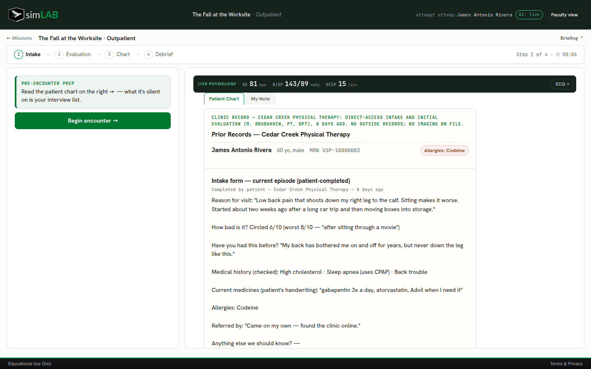
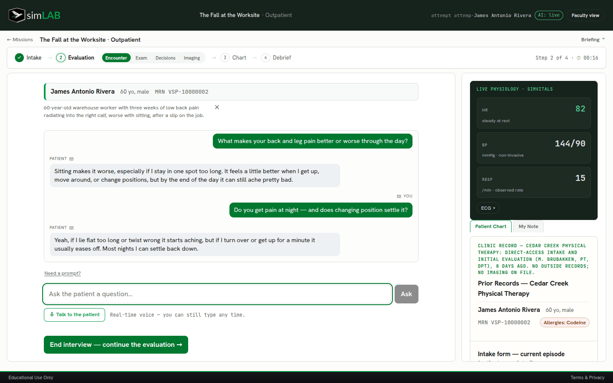
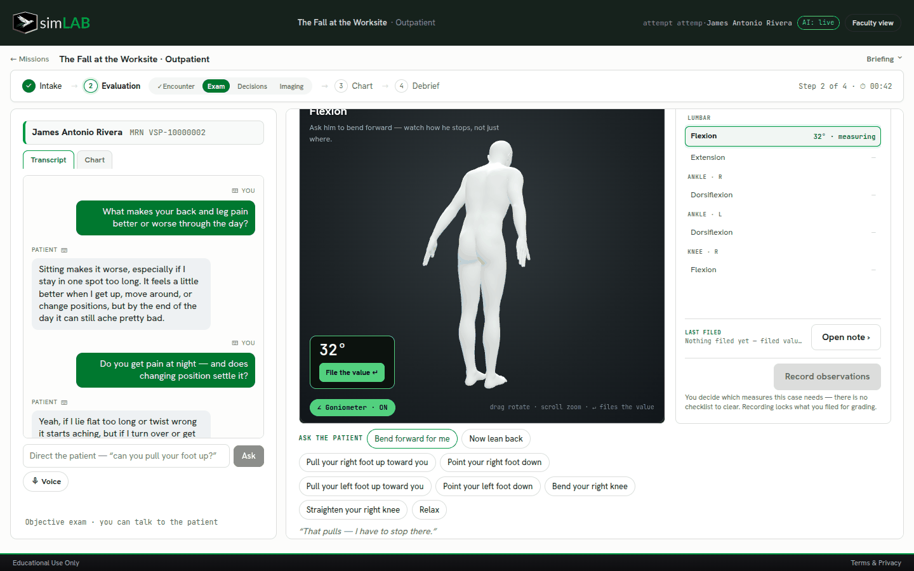
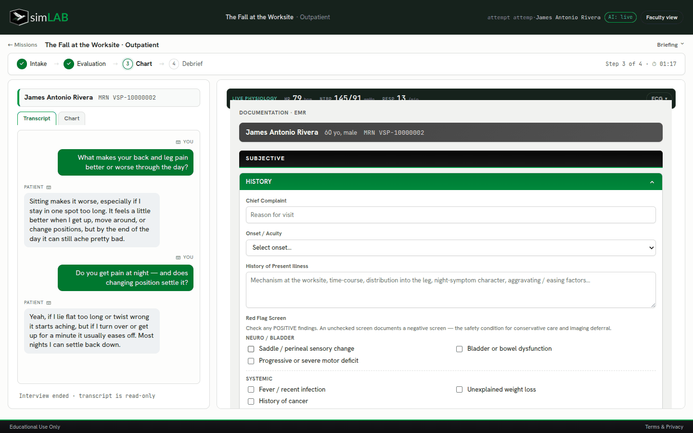
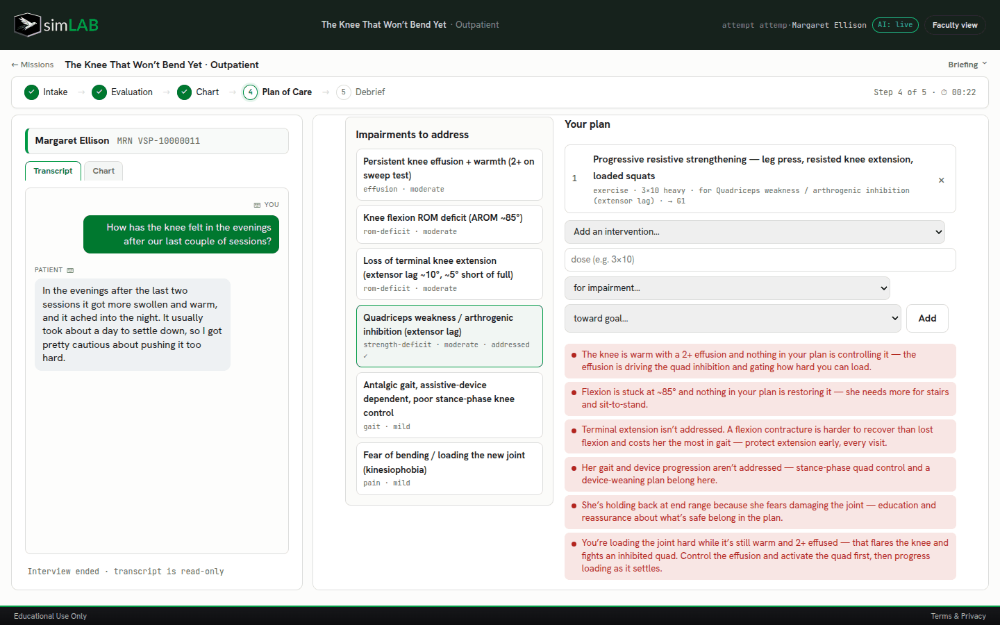
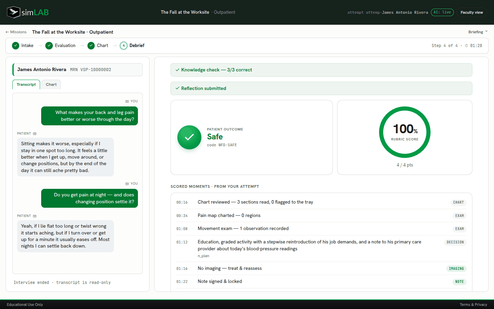
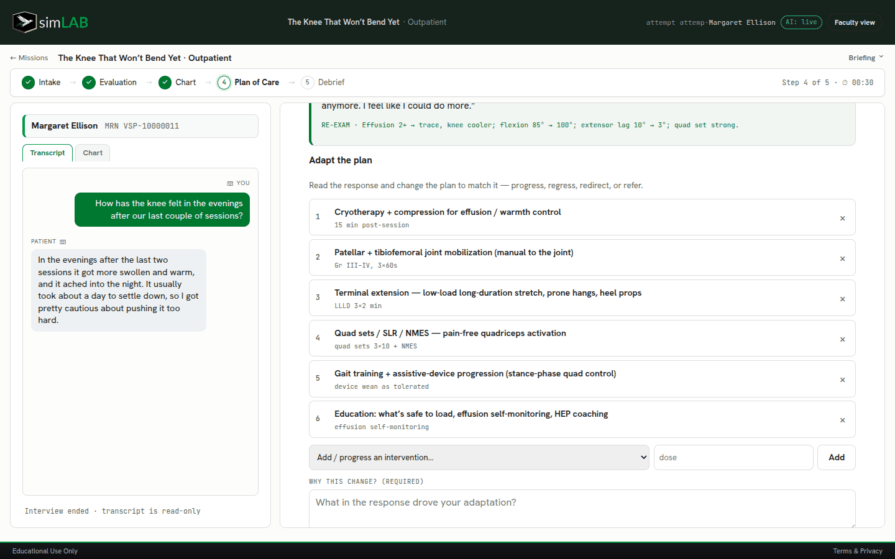
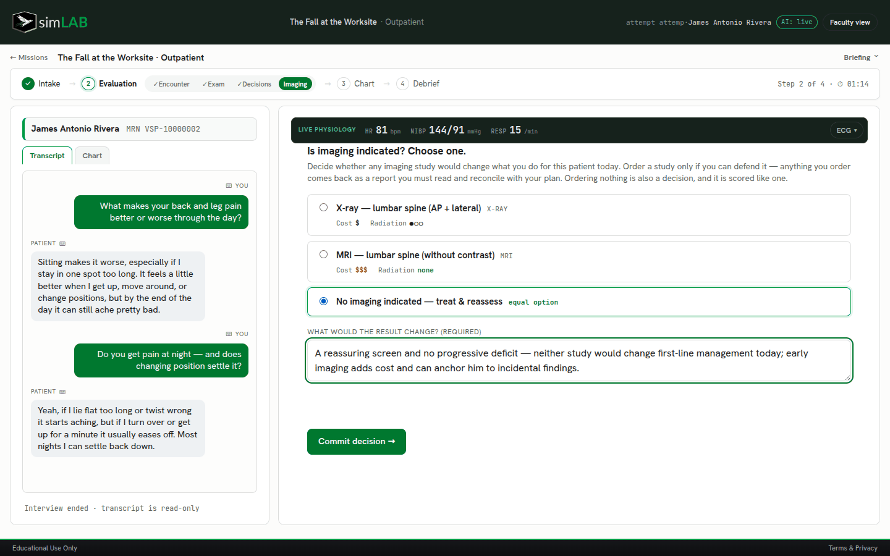
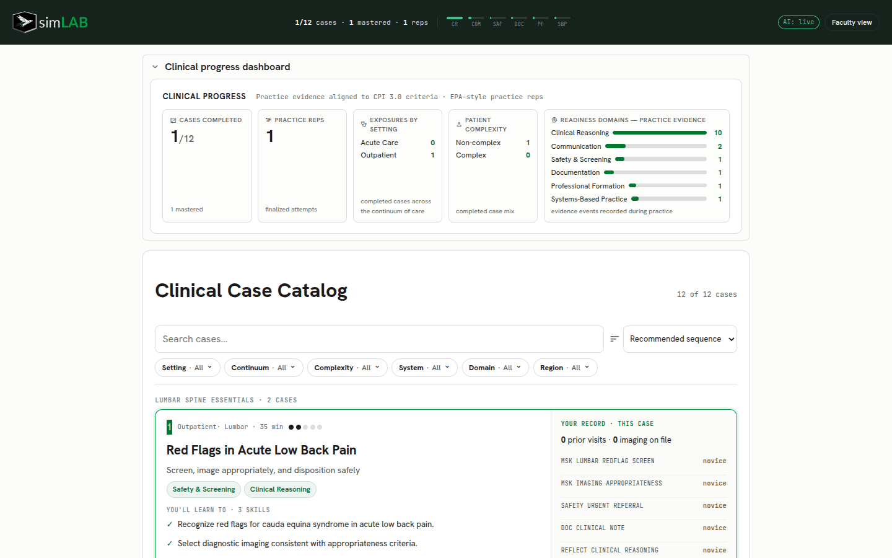

Identify red flags and medical concerns
// in development - pilot access estimated September 2026
Clinical Reasoning Simulator for DPT Programs
DevPT's simLAB will provide DPT programs with a standardized, virtual platform for experiential learning and competency based training.
Students will navigate realistic clinical scenarios, communicate with virtual patients, practice key skills, and receive feedback from specialized AI agents.
Competency-based practice · Simulated PT cases · Faculty-visible reasoning trail · No real patient data






- Intake
- Ask
- Exam
- Chart
- Plan
- Debrief
Screen. Ask. Map. Monitor. Move. Decide. Order. Document. Plan. Adapt. Communicate. Reflect.
Structured practice in PT clinical decision-making.
DevPT turns a simulated encounter into a visible sequence of reasoning moves faculty can observe and debrief.
Interview the patient — typed or voice
Characterize symptoms on a 3D body
Interpret live vitals and patient response
Direct the movement exam and measure it
Treat, refer, modify, or gather more data
Decide whether imaging changes management
Sign a note with linked problems and goals
Match interventions to impairments, in order
Change the plan when the patient responds
Put the provider handoff in writing, in the note
Debrief the moments that earned the score
// response to treatment
The patient responds. The plan has to answer.
Cases don't end at the first visit. In simLAB's plan-of-care phase, the student matches interventions to the patient's impairments, commits the plan, then reads the follow-up — and adapts to how the patient actually responded.
one patient, carried through time
Margaret's knee: prehab, day of surgery, outpatient recovery.
Three linked cases follow one virtual patient across her knee-replacement journey. The same weak quadriceps gets a different answer at every stage — the student has to read the joint in front of them, not apply one protocol. Here, her follow-up re-exam has come back: the plan must be progressed, and the student says why.

// sample case walkthrough
James, 60: low back and leg pain — and a finding that isn't his back.
Follow an authored simLAB case from intake to the signed note and see the artifacts a faculty member could debrief afterward. Every screen was captured from a real attempt in the simulator.
01 / intake
The record frames the visit.
A prior PT evaluation is on file — and an elevated check-in blood pressure sits in plain view. What the chart is silent on becomes the student's interview list.
02 / interview
The interview characterizes the night pain instead of checkboxing it.
"Do you get pain at night — and does changing position settle it?"
03 / decision and note
Assessment
Reassuring screen; movement exam matches the story. Graded return to his job demands — and today's blood-pressure readings go to his physician, in writing.

04 / imaging decision
Ordering nothing is also a decision — and it's scored like one.
Every option demands the same question: what would the result change?
// faculty view
A reasoning trail faculty can debrief — not reconstruct.
Every attempt records its artifacts — what was read, asked, measured, ordered, signed, planned, and revised. The debrief lays them out so a faculty member can coach the reasoning instead of reconstructing it.
clinical progress — practice evidence
Readiness domains, exposures, and reps — from real attempts

what the trail holds
- Every question asked, in order
- Every measurement filed, and when
- Decisions, with the rationale they demanded
Chart findings
Interview transcript
Movement measurements
Imaging decision + rationale
Signed note + problem list
Plan of care + adaptation
Reflection
// simulator logic
A clinical reasoning simulator for PT education.
Aviation
Clinical education
Simulator cockpit
Case environment
Emergency scenario
Red flag / complex presentation
Flight log
Student documentation trail
Instructor debrief
Faculty feedback / reflection
Safe repetition before clinical placement.
- In development; pilot access estimated September 2026.
- Simulated PT cases.
- Faculty-visible reasoning trail.
- No real patient data.
// research opportunities
PainMap as a candidate outcome measure for pain science.
PainMap is being developed to capture more than a single pain score. The research opportunity is a repeatable visual profile of where pain is, how it behaves, and how it changes after education, movement, or treatment.
Follow PainMap development →
PAINT profile
A brief visual way to explain what PainMap could measure.
// DevPT Lab research
Research questions the lab can support.
Track how students screen, ask, decide, document, and revise decisions across repeated simulated cases.
Compare feedback models, simulation dose, case sequencing, or interprofessional communication prompts.
Study rubric reliability against the visible reasoning trail: questions asked, decisions made, notes, and reflections.
Run research pilots on simulated encounters while avoiding protected health information in the learning environment.
// quiet next step
See a student encounter.
For class demos, pilot planning, collaboration, or research partnerships, reach out and I will show the case flow and research directions.
References
- Cook DA, Hatala R, Brydges R, et al. Technology-Enhanced Simulation for Health Professions Education: A Systematic Review and Meta-analysis. JAMA. 2011;306(9):978-988. PubMed
- Simulated Patients in Physical Therapy Education: A Systematic Review and Meta-Analysis. Physical Therapy. 2016. PubMed
- Plackett R, et al. The effectiveness of using virtual patient educational tools to improve medical students' clinical reasoning skills: a systematic review. BMC Medical Education. 2022;22:365. Full text
- Limitations of pain numeric rating scale scores collected during usual care: need for enhanced assessment. The Journal of Pain. 2017. Full text